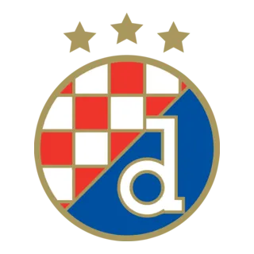
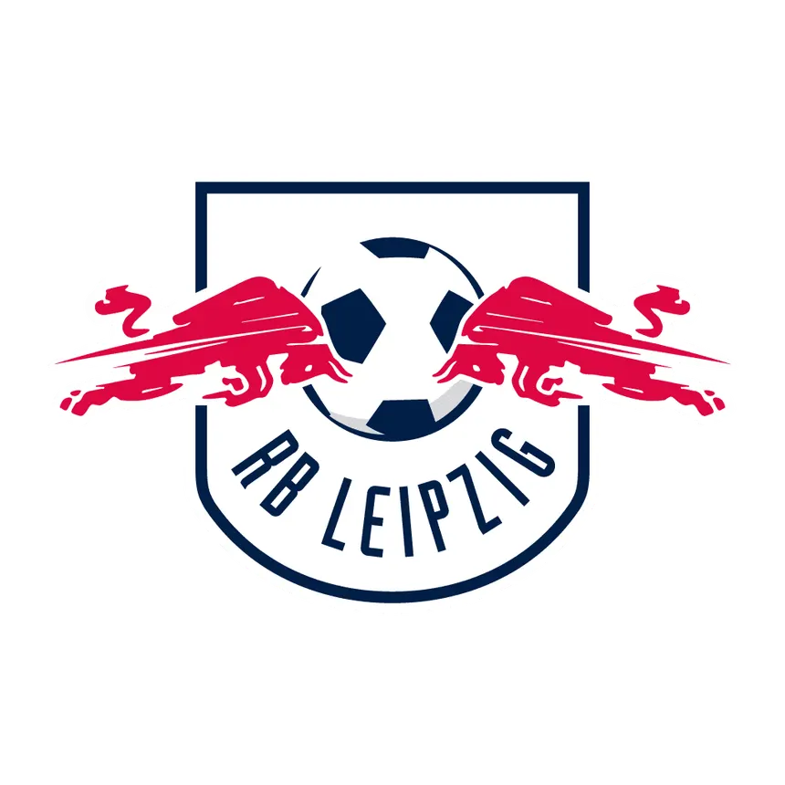

Após 'chocolate' em cima da Internazionale, o PSG é campeão da Champions League. Veja os melhores momentos!
Título veio diante do Manchester United.
Aos 40 anos, CR7 garante a vaga de Portugal em mais uma final da Nations League.
Após a goleada sofrida na final da UCL, Simone Inzaghi é anunciado pelo Al-Hilal.
Champions League - Fase de Liga
| P | Time | P | J | V | E | D |
|---|---|---|---|---|---|---|
| 1 | Liverpool | 21 | 8 | 7 | 0 | 1 |
| 2 | Barcelona | 19 | 8 | 6 | 1 | 1 |
| 3 | Arsenal | 19 | 8 | 6 | 1 | 1 |
| 4 | Internazionale | 19 | 8 | 6 | 1 | 1 |
| 5 | Atlético de Madrid | 18 | 8 | 6 | 0 | 2 |
| 6 | Bayer Leverkusen | 18 | 8 | 5 | 1 | 2 |
| 7 | Lille | 18 | 8 | 5 | 1 | 2 |
| 8 | Aston Villa | 16 | 8 | 5 | 1 | 2 |
| 9 | Atalanta | 15 | 8 | 4 | 3 | 1 |
| 10 | Borussia Dortmund | 15 | 8 | 5 | 0 | 3 |
| 11 | Real Madrid | 15 | 8 | 5 | 0 | 3 |
| 12 | Bayern | 15 | 8 | 5 | 0 | 3 |
| 13 | Milan | 15 | 8 | 5 | 0 | 3 |
| 14 | PSV | 14 | 8 | 4 | 2 | 2 |
| 15 | Paris SG | 13 | 8 | 4 | 1 | 3 |
| 16 |
 Benfica
Benfica
|
13 | 8 | 4 | 1 | 3 |
| 17 | Mônaco | 13 | 8 | 4 | 1 | 3 |
| 18 | Brest | 13 | 8 | 4 | 1 | 3 |
| 19 | Feyenoord | 13 | 8 | 4 | 1 | 3 |
| 20 | Juventus | 12 | 8 | 3 | 3 | 2 |
| 21 |
 Celtic
Celtic
|
12 | 8 | 3 | 3 | 2 |
| 22 | Manchester City | 11 | 8 | 3 | 2 | 3 |
| 23 | Sporting | 11 | 8 | 3 | 2 | 3 |
| 24 | Club Brugge | 11 | 8 | 3 | 2 | 3 |
| 25 |  Dínamo Zagreb | 11 | 8 | 3 | 2 | 3 |
| 26 | Sttutgart | 10 | 8 | 3 | 1 | 4 |
| 27 | Shaktar Donetsk | 7 | 8 | 2 | 1 | 5 |
| 28 | Bologna | 6 | 8 | 1 | 3 | 4 |
| 29 | Estrela Vermelha | 6 | 8 | 2 | 0 | 6 |
| 30 | Sturm Graz | 6 | 8 | 2 | 0 | 6 |
| 31 | Sparta Praga | 4 | 8 | 1 | 1 | 6 |
| 32 |  RB Leipzig | 3 | 8 | 1 | 0 | 7 |
| 33 | Girona | 3 | 8 | 1 | 0 | 7 |
| 34 | RB Salzburg | 3 | 8 | 1 | 0 | 7 |
| 35 | Slovan Bratislava | 0 | 8 | 0 | 0 | 0 |
| 36 | Young Boys | 0 | 8 | 0 | 0 | 0 |